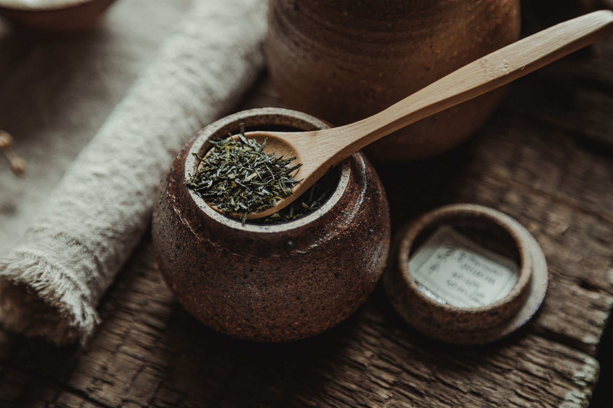

Drinking tea is often believed to result in calm alertness; it contains L-theanine,
theophylline, and bound caffeine (sometimes called theine). Decaffeinated brands are also
sold. While herbal teas are also referred to as tea, most of them do not contain leaves from
the tea plant. While tea is the second most consumed beverage on Earth after water, in many
cultures it is also consumed at elevated social events, such as the tea party.
Tea ceremonies have arisen in different cultures, such as the Chinese and Japanese traditions
, each of which employ certain techniques and ritualised protocol of brewing and serving tea
for enjoyment in a refined setting. One form of Chinese tea ceremony is the Gongfu tea
ceremony, which typically uses small Yixing clay teapots and oolong tea.
Tea storage

Green Tea Jar
Storage conditions and type determine the shelf life of tea; that of black teas is greater
than that of green teas. Some, such as flower teas, may last only a month or so. Others, such
as pu-erh, improve with age. To remain fresh and prevent mold, tea needs to be stored away
from heat, light, air, and moisture. Tea must be kept at room temperature in an air-tight
container. Black tea in a bag within a sealed opaque canister may keep for two years. Green
tea deteriorates more rapidly, usually in less than a year. Tightly rolled gunpowder tea
leaves keep longer than the more open-leafed Chun Mee tea.
Storage life for all teas can be extended by using desiccant or oxygen-absorbing packets,
vacuum sealing, or refrigeration in air-tight containers (except green tea, where discrete
use of refrigeration or freezing is recommended and temperature variation kept to a minimum).